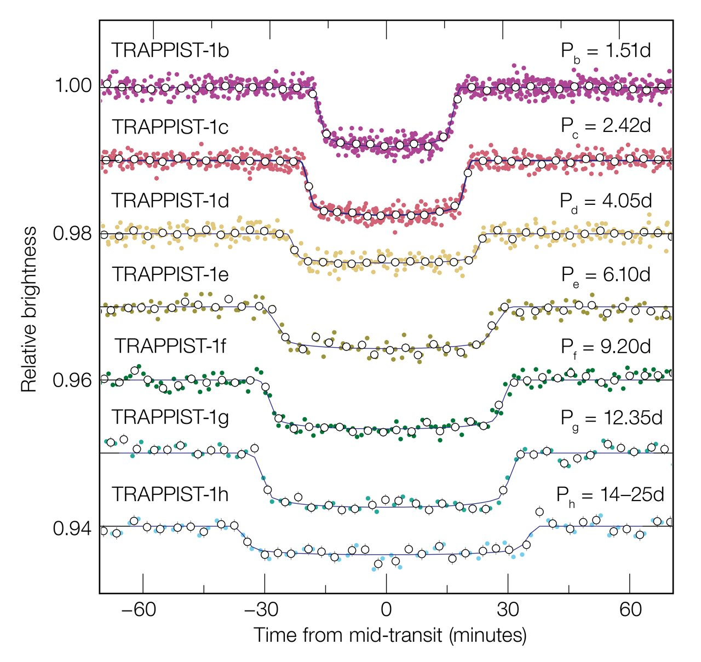
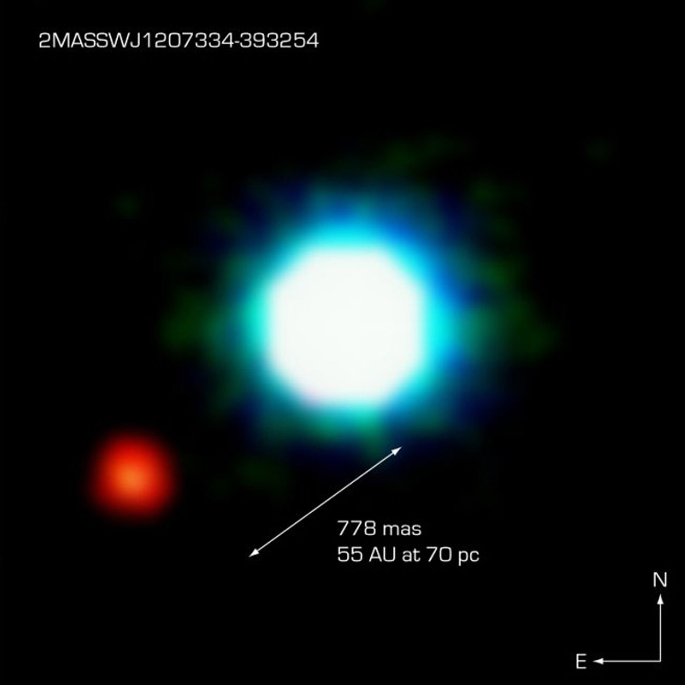

For over three decades, exoplanets (planets orbiting stars outside of our solar system) have been discovered via a multitude of different detection techniques ranging from radial velocity to microlensing. Each of these detection methods is unique, providing inherent observational bias towards the type of planet they are able to detect. As a result of such bias, our knowledge of existing exoplanets may be limited and fail to represent the true diversity throughout the known universe.
Our project aims to analyze each detection method's unique biases and how they shape the characteristics of the exoplanets we observe. Through close examination of the relationship between discovery methods and planetary characteristics we hope to further understand how our overall knowledge of exoplanets is influenced by technological constraints.
We began by examining an article published by The School's Observatory, which explored the methods used by scientists when studying exoplanets. For example, the article discusses how Astrometry is the most appropriate when looking for Earth-like exoplanets or planets located at large distances from their star, given that it measures minor changes in a star’s position caused by the gravitational pull of orbiting planets. Another method uses transits of planets in front of stars, which creates a distinctive dip in brightness called a light curve.
Figure 1. Plot of the light curves caused by exoplanets transiting the star TRAPPIST-1 (source)

However, the transit method only works if the planet passes between us and the star, which is not true for all orientations. Additionally, unlike Astrometry, the transit method is most suitable in detecting larger dips which occur often enough to notice, making it biased towards finding large planets with short orbital periods. Contrastingly, the direct imaging method—blocking the light from the star and looking for light reflected by an exoplanet—can in theory better distinguish distant planets, albeit at the cost of said planets appearing fainter.
Figure 2. A direct image of the exoplanet 2M1207b (source)

These differences in the methods used have allowed us to start to consider how these biases have affected the information and knowledge we have about existing exoplanets.
We then explored an article published by the International Journal of Scientific Research Technology, explaining how discovery methods have evolved and how improvements in various observing techniques have made these methods more effective in the discovery of exoplanets. This article supports our motivation behind our topic, since it explores how improvements in the detection and study of exoplanets have allowed astronomers to find smaller, Earth-like planets and analyze their atmospheres with greater accuracy. For example, the article highlights the growing role of machine learning and data analysis, which have become especially valuable for studying complex multi-planet systems and refining detection algorithms. All in all, this article displays the importance of continued refinement of these techniques in expanding our understanding of planetary diversity.
This project uses data from the NASA Exoplanet Archive, which catalogs all confirmed exoplanets along with their measured physical and orbital properties and the methods and facilities used to discover them. Before analysis, we removed any planets flagged as controversial and dropped duplicate entries for the same planet discovered by the same method in the same year. The columns used in this project are described below.
| Column | Description | Units |
|---|---|---|
| Identification | ||
| pl_name | Planet name | — |
| hostname | Host star name | — |
| Discovery | ||
| discoverymethod | Method used to discover the planet (e.g. Transit, Radial Velocity) | — |
| disc_facility | Facility or telescope that made the discovery | — |
| disc_year | Year the planet was discovered | Year |
| Planetary Radius | ||
| pl_rade | Planet radius | Earth radii |
| pl_radeerr1 / pl_radeerr2 | Upper and lower error bounds on planet radius | Earth radii |
| Planetary Mass | ||
| pl_bmasse | Planet mass or mass×sin(i) — the latter gives a minimum mass estimate based on orbital inclination | Earth masses |
| pl_bmasseerr1 / pl_bmasseerr2 | Upper and lower error bounds on planet mass | Earth masses |
| Orbital Period | ||
| pl_orbper | Time taken for the planet to complete one orbit around its host star | Days |
| pl_orbpererr1 / pl_orbpererr2 | Upper and lower error bounds on orbital period | Days |
| Orbital Semi-Major Axis | ||
| pl_orbsmax | The longest radius of the planet's elliptical orbit — a measure of how far the planet is from its star on average | AU |
| pl_orbsmaxerr1 / pl_orbsmaxerr2 | Upper and lower error bounds on semi-major axis | AU |
| Orbital Eccentricity | ||
| pl_orbeccen | How elliptical the orbit is — 0 is a perfect circle, values closer to 1 are more elongated | — |
| pl_orbeccenerr1 / pl_orbeccenerr2 | Upper and lower error bounds on eccentricity | — |
| pl_name | hostname | discoverymethod | disc_facility | disc_year | pl_rade | pl_bmasse | pl_orbper | pl_orbsmax | pl_orbeccen |
|---|---|---|---|---|---|---|---|---|---|
| 11 Com b | 11 Com | Radial Velocity | Xinglong Station | 2007 | — | 4914.898 | 323.21 | 1.178 | 0.238 |
| 11 UMi b | 11 UMi | Radial Velocity | Thueringer Landessternwarte Tautenburg | 2009 | — | 4684.814 | 516.22 | 1.53 | 0.08 |
| 14 And b | 14 And | Radial Velocity | Okayama Astrophysical Observatory | 2008 | — | 1131.151 | 186.76 | 0.775 | 0.0 |
| 14 Her b | 14 Her | Radial Velocity | W. M. Keck Observatory | 2002 | — | 2559.472 | 1765.039 | 2.774 | 0.373 |
| 16 Cyg B b | 16 Cyg B | Radial Velocity | Multiple Observatories | 1996 | — | 565.737 | 798.5 | 1.66 | 0.68 |
| 17 Sco b | 17 Sco | Radial Velocity | Lick Observatory | 2020 | — | 1373.019 | 578.38 | 1.45 | 0.06 |
| 18 Del b | 18 Del | Radial Velocity | Okayama Astrophysical Observatory | 2008 | — | 2926.246 | 982.85 | 2.476 | 0.024 |
| 1RXS J160929.1-210524 b | 1RXS J160929.1-210524 | Imaging | Gemini Observatory | 2008 | 18.647 | 2543.0 | — | 330.0 | — |
| 24 Boo b | 24 Boo | Radial Velocity | Okayama Astrophysical Observatory | 2018 | — | 280.642 | 30.33 | 0.194 | 0.032 |
| 24 Sex b | 24 Sex | Radial Velocity | Lick Observatory | 2010 | — | 632.46 | 452.8 | 1.333 | 0.09 |
Note: error bound columns (e.g. pl_radeerr1, pl_bmasseerr1) are omitted from this preview for readability but are included in the full dataset used for analysis.
Next Page